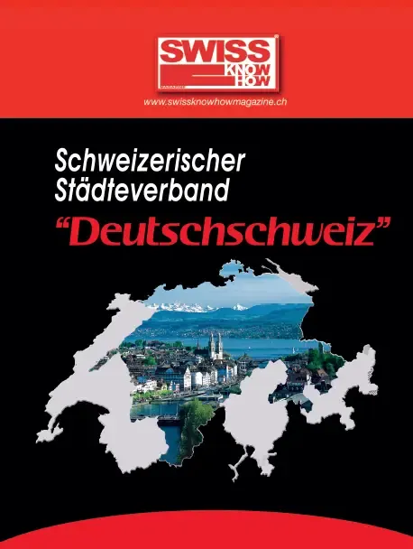

En bref
Alexandra Siegrist-Tsakanakis dirige Impuls Mittelschule, service de relations publiques créé en 2001 par la conférence des directeurs pour donner une voix commune aux 20 gymnases cantonaux zurichois. Le service organise notamment l'exposition des meilleurs travaux de maturité, participe aux salons de l'emploi pour recruter des enseignants, formule des positions communes et répond aux médias. Elle décrit le gymnase comme une école de la réflexion et de la personnalité, qui développe aussi les compétences sociales et artistiques. Cinq profils de maturité sont proposés ; le gymnase long est offert par 12 écoles, l'enseignement par immersion par 18, et deux établissements permettent d'obtenir aussi le baccalauréat international. Depuis 2002, le travail de maturité est devenu un élément central de la formation. L'entretien est publié en allemand et en français.
« Das Gymnasium ist eine Denk- und Persönlichkeitsschule. »— Alexandra Siegrist-Tsakanakis
L'interview intégrale
Entretien avec Alexandra Siegrist-Tsakanakis, directrice de IMPULS MITTELSCHULE, le service de relations publiques des gymnases cantonaux de Zurich
Madame Siegrist-Tsakanakis, IMPULS MITTELSCHULE a été créée en 2001 suite à la conférence cantonale des chefs d’établissement et est depuis devenue une institution pour les relations publiques générales des gymnases de Zurich. Quelles sont les raisons de ce succès ?
La fondation de notre groupe de projet répondait au besoin de longue date de donner une voix unie aux 20 gymnases cantonaux de Zurich. IMPULS MITTELSCHULE représente les intérêts des gymnases dans le domaine public, établit le dialogue avec tous les interlocuteurs importants et communique les points de vue généraux sur des sujets majeurs.
Quels sont vos missions, thèmes et objectifs principaux dans le cadre de vos activités ?
L’exposition de travaux de maturité de bonne qualité (www.maturitätsarbeit.ch), qui suscite chaque année un grand intérêt, montre de façon exemplaire avec quelle inspiration et quelle passion nous travaillons dans les écoles. Par ailleurs, nous participons à des salons de l’emploi afin de recruter des enseignants qualifiés et nous occupons de manière générale de la professionnalisation des relations publiques. Nous nous occupons également de la formulation et de la communication de positions communes sur certains thèmes de l’enseignement et nous répondons aux demandes des médias. Notre site Web (www.impulsmittelschule.ch) fait désormais partie des plates-formes d’information les plus consultées dans le domaine de l’enseignement à Zurich.
La mission des gymnases de Zurich ne se limite pas à la transmission du savoir. Que signifie désormais l’« obtention de la maturité » ?
Le gymnase est une école favorisant le développement de la réflexion et de la personnalité. Il exige beaucoup de ses élèves, mais également de lui-même. Son objectif principal est évidemment l’obtention de la maturité, mais ses missions dépassent grandement le cadre de la simple transmission des connaissances. La stimulation des capacités sociales dans le cadre des relations avec d’autres personnes et d’autres cultures, ainsi que l’apprentissage des sens via la musique, l’art et le sport occupent également une place importante au gymnase.
Quels profils de maturité offrent les gymnases de Zurich ?
Nos 20 gymnases aspirent à dispenser une formation la plus étendue possible. Cela implique la possibilité de choisir soi-même le profil de maturité et ainsi de tenir compte des préférences individuelles. Dans le canton de Zurich, cinq profils de maturité sont actuellement proposés : le profil « langues anciennes », le profil « langues vivantes », le profil « mathématiques et sciences », le profil « économie et droit » et le profil « musique ». Il faut cependant noter que toutes les écoles ne proposent pas tous les profils.
Le gymnase long est ainsi proposé par 12 des 20 écoles de Zurich. Quels sont ses particularités et ses conditions d’admission ?
L’entrée en classe 1 du gymnase long est possible dès la 6e classe d’une école primaire de Zurich ou nécessite un niveau de formation équivalent. Les élèves particulièrement doués et intéressés, qui aiment les études et possèdent un degré de curiosité et un enthousiasme certains peuvent également se voir proposer d’entrer au gymnase long. Ce dernier leur apprend à travailler en fonction de leurs capacités et de leurs objectifs et proposent un vaste choix de formations.
18 gymnases de Zurich proposent des enseignements par immersion. Pouvez-vous nous présenter plus en détail cette méthode d’enseignement ?
Les connaissances linguistiques font partie des connaissances principales pour la vie dans la société actuelle. L’enseignement par immersion rend l’acquisition de la langue beaucoup plus naturelle. Certaines matières sélectionnées sont enseignées en anglais, avec pour objectif non seulement l’acquisition de connaissances techniques, mais également le développement et l’approfondissement des compétences en matière de communication en anglais. Dans deux de nos gymnases, il est également possible de passer le diplôme du baccalauréat international en plus de la maturité suisse bilingue. Il existe également des écoles qui proposent des enseignements par immersion en français ou encore en italien.
Depuis 2002, les élèves du gymnase doivent rédiger un travail de maturité au cours de leur dernière année d’études. Quel bilan peut-on établir par rapport à cet élément de maturité ?
Les travaux de maturité sont rédigés de façon autonome par nos élèves. Ils donnent aux élèves l’occasion de rédiger une analyse approfondie sur un thème de leur choix et constituent une excellente préparation pour l’entrée dans un établissement d’enseignement supérieur. Les travaux de maturité sont devenus l’une des caractéristiques principales des cycles de formation proposés par les gymnases et ne peuvent plus être ignorés dans le quotidien scolaire. Les élèves, de leur côté, apprécient de pouvoir utiliser leur liberté pour se concentrer sur ce qui est important pour eux.
Texte paru dans Swiss Knowhow – Union des villes suisses : Suisse alémanique (2014), p. 67.
Personnes citées
- Alexandra Siegrist-TsakanakisLeiterin Impuls Mittelschule

Paru dans
Swiss Knowhow – Union des villes suisses : Suisse alémanique (2014)
2014 · page 66-68 · article original en allemand
Lire l'article complet PDF